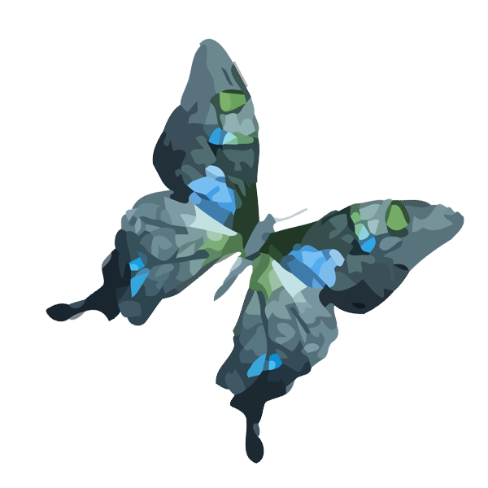
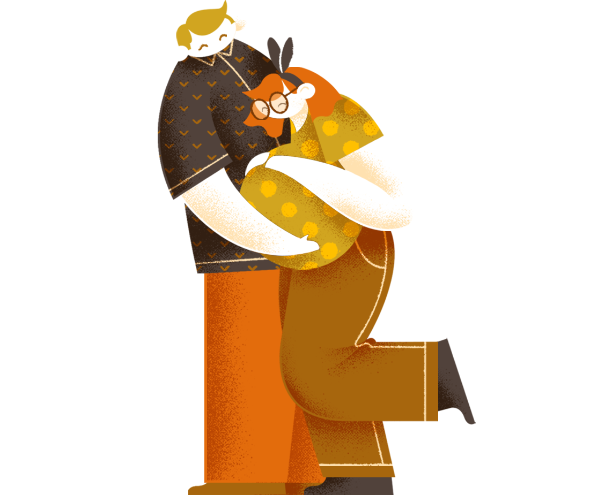
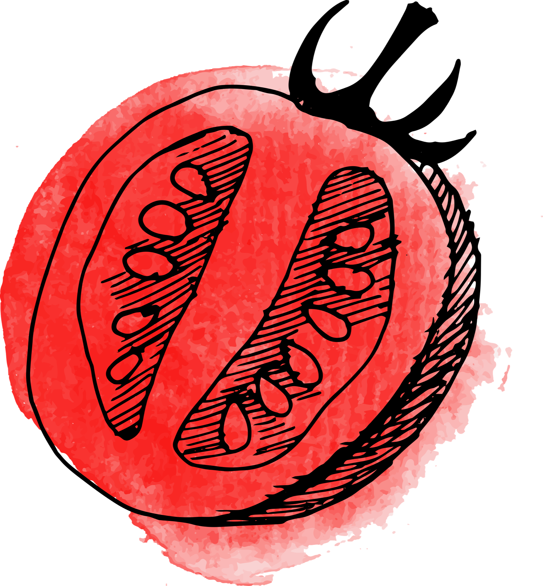
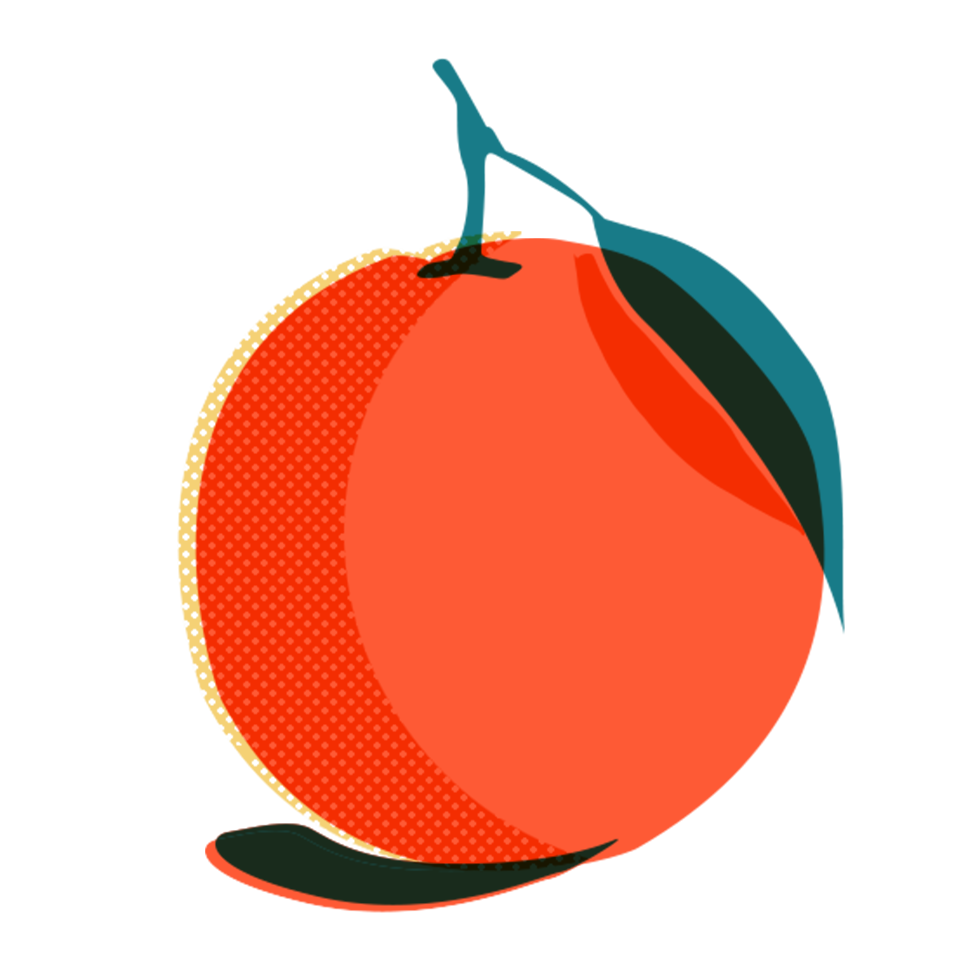

For Groups & Organizations
Workshops & Trainings
I specialize in designing workshops about sexual health, gender-based violence, menstrual health, abortion, fertility awareness, reproductive justice and more! I know these topics can be sensitive, triggering, and difficult to discuss, and I am well versed at creating trauma-informed spaces with emotional safety in mind.
I tailor every offering to your specific group and purpose. Working together includes a discovery call to learn about you, your group or organization, your group goals for learning, accessibility information, and important context I should know.
I modify curriculum based on the specific group, learning goals, and subject. Accessibility is of the utmost importance, and I seek to create safer spaces where folks can participate and feel taken care of in their learning. Participants walk away with digital resources to continue their learning, and clear calls to action.
Standard Offerings
Six ready-to-tailor workshops. Tap any title for the full description.
 Reproductive Justice in Canadian Context
Reproductive Justice in Canadian Context
International and national historical context to the current state of reproductive justice in Canada. Includes abortion activism, contextualization within colonial North America, and Indigenous, Black, and migrant-led activism.
 Receiving Disclosures of Sexual Violence Well
Receiving Disclosures of Sexual Violence Well
A person's reaction to a disclosure of sexual violence is instrumental in supporting a survivor's healing. We discuss rape culture, trauma, the prevalence of gender-based violence, and evidence-based information about survivor healing journeys, plus strategies for receiving disclosures with compassion.

Working with Self-Harm and Suicide Ideation
Suicide ideation and self-harm are common mechanisms for coping with emotional pain. Learn how to support someone with these coping mechanisms in a liberatory way, and keep your community members safe from state and police violence.

Pregnancy News: What is an Options Framework?
Pregnancy does not equal parenting. Designed for people in a service-provision role who want to receive news about pregnancy from their clients sensitively. Learn to engage in supportive conversations about pregnancy options and make appropriate referrals.

Contraceptive Options: The Full Briefing
Covers all available contraceptive options, including side effects, efficacy, and the lived experience of using each method. This is the briefing your doc might not give you!

Fertility Awareness 101
Your first introduction to Fertility Awareness! Includes brief anatomy and physiology, an introductory how-to and rules of fertility awareness, and dispelling myths about this transformative practice.
Tailor-Made Workshops & Trainings
Every offering is designed for the group in the room. A sample of past commissions:
"Reproductive Rights in Canadian Context"
for Elementary Teachers Federation of Ontario (ETFO)
"Receiving Disclosures of Sexual Violence Well"
for staff of Toronto Metropolitan University
"Intersectional Abortion Care in a Colonial Context"
for National Abortion Federation Canada. Co-presented with Krysta Williams, Full Spectrum Indigenous Doula
"Pregnancy Options Counselling"
for Action Canada for Sexual Health and Rights Access Line Volunteers
"Fertility Awareness Method 101"
for the Toronto Birth Centre & Planned Parenthood Toronto
For Toronto Rape Crisis Centre
Crisis Counsellor Trainings
A five-part training series designed and facilitated for TRCC's crisis counsellors:
- Working Across Difference / Anti-oppression & Anti-racism
- Holding Space for Trauma & Counselling Skills
- Medical Interventions after Sexual Assault
- Activism Against Sexual Violence in International Context
- Working with Self-harm and Suicide Ideation
Let's work together
Tell me about your group's needs and I'll be in touch to design something that fits.
Sliding scale and payment plans available.